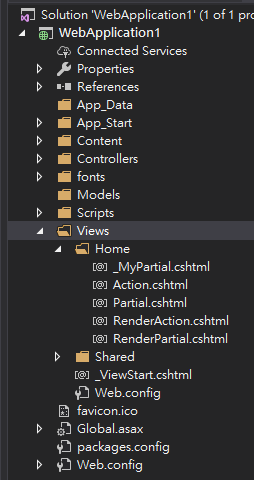
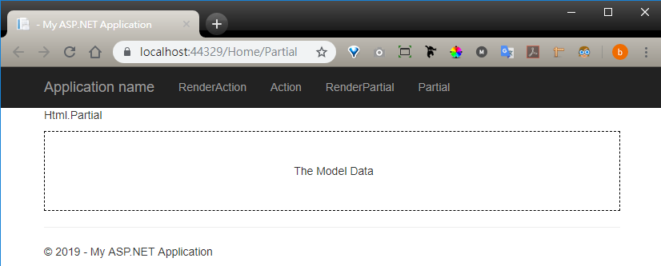
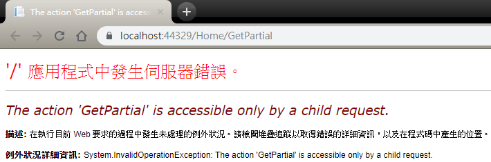
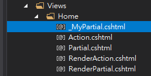
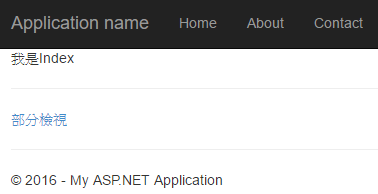
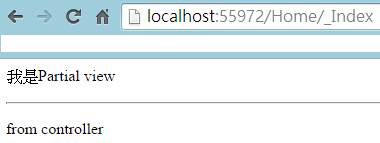

一、Html.RenderAction、Html.Action、Html.RenderPartial、Html.Partial 之間的差異如下表
| 是否經過 Controller | 是否為 @{} 語法，不需回傳MvcHtmlString | |
| Html.RenderAction | Y | Y |
| Html.Action | Y | N |
| Html.RenderPartial | N | Y |
| Html.Partial | N | N |
二、範例準備

RouteConfig.cs 內容為
using System;
using System.Collections.Generic;
using System.Linq;
using System.Web;
using System.Web.Mvc;
using System.Web.Routing;
namespace WebApplication1
{
public class RouteConfig
{
public static void RegisterRoutes(RouteCollection routes)
{
routes.IgnoreRoute("{resource}.axd/{*pathInfo}");
routes.MapRoute(
name: "Default",
url: "{controller}/{action}/{id}",
defaults: new { controller = "Home", action = "RenderAction", id = UrlParameter.Optional }
);
}
}
}
_Layout.cshtml 內容為
<!DOCTYPE html> <html> <head> <meta charset="utf-8" /> <meta name="viewport" content="width=device-width, initial-scale=1.0"> <title>@ViewBag.Title - My ASP.NET Application</title> @Styles.Render("~/Content/css") @Scripts.Render("~/bundles/modernizr") </head> <body> <div class="navbar navbar-inverse navbar-fixed-top"> <div class="container"> <div class="navbar-header"> <button type="button" class="navbar-toggle" data-toggle="collapse" data-target=".navbar-collapse"> <span class="icon-bar"></span> <span class="icon-bar"></span> <span class="icon-bar"></span> </button> @Html.ActionLink("Application name", "RenderAction", "Home", new { area = "" }, new { @class = "navbar-brand" }) </div> <div class="navbar-collapse collapse"> <ul class="nav navbar-nav"> <li>@Html.ActionLink("RenderAction", "RenderAction", "Home")</li> <li>@Html.ActionLink("Action", "Action", "Home")</li> <li>@Html.ActionLink("RenderPartial", "RenderPartial", "Home")</li> <li>@Html.ActionLink("Partial", "Partial", "Home")</li> </ul> </div> </div> </div> <div class="container body-content"> @RenderBody() <hr /> <footer> <p>© @DateTime.Now.Year - My ASP.NET Application</p> </footer> </div> @Scripts.Render("~/bundles/jquery") @Scripts.Render("~/bundles/bootstrap") @RenderSection("scripts", required: false) </body> </html>
HomeController.cs 內容為
using System;
using System.Collections.Generic;
using System.Linq;
using System.Web;
using System.Web.Mvc;
namespace WebApplication1.Controllers
{
public class HomeController : Controller
{
public ActionResult RenderAction()
{
return View();
}
public ActionResult Action()
{
return View();
}
public ActionResult RenderPartial()
{
return View();
}
public ActionResult Partial()
{
return View();
}
public ActionResult GetPartial()
{
return PartialView("_MyPartial");
}
}
}
_MyPartial.cshtml 內容為
<style> .partial { vertical-align: middle; height: 100px; text-align: center; border: 1px black dashed; } .partial:before { content: ''; height: 100%; display: inline-block; vertical-align: middle; } .partial > span { vertical-align: middle; } </style> <div class="partial"> <span> MyPartial </span> </div>
三、範例演示
1、Html.RenderAction
| 名稱 | 說明 |
| RenderAction(HtmlHelper, String actionName) | 叫用指定的子系動作方法，並呈現內嵌於父檢視內的結果。 |
| RenderAction(HtmlHelper, String actionName, Object routeValues) | 使用指定的參數叫用指定的子系動作方法，並呈現內嵌於父檢視內的結果。 |
| RenderAction(HtmlHelper, String actionName, String controllerName) | 使用指定的控制器名稱叫用指定的子系動作方法，並呈現內嵌於父檢視內的結果。 |
| RenderAction(HtmlHelper, String actionName, RouteValueDictionary routeValues) | 使用指定的參數叫用指定的子系動作方法，並呈現內嵌於父檢視內的結果。 |
| RenderAction(HtmlHelper, String actionName, String controllerName, Object routeValues) | 使用指定的參數和控制器名稱叫用指定的子系動作方法，並呈現內嵌於父檢視內的結果。 |
| RenderAction(HtmlHelper, String actionName, String controllerName, RouteValueDictionary routeValues) | 使用指定的參數和控制器名稱叫用指定的子系動作方法，並呈現內嵌於父檢視內的結果。 |
RenderAction.cshtml
@{ ViewBag.Title = "Home Page"; } <p>Html.RenderAction</p> @{ Html.RenderAction("GetPartial");}
2、Html.Action
| 名稱 | 說明 |
| Action(Html |
Invokes the specified child action method and returns the result as an HTML string. |
| Action(Html |
Invokes the specified child action method with the specified parameters and returns the result as an HTML string. |
| Action(Html |
Invokes the specified child action method using the specified controller name and returns the result as an HTML string. |
| Action(Html |
Invokes the specified child action method using the specified parameters and returns the result as an HTML string. |
| Action(Html |
Invokes the specified child action method using the specified parameters and controller name and returns the result as an HTML string. |
| Action(Html |
Invokes the specified child action method using the specified parameters and controller name and returns the result as an HTML string. |
Action.cshtml
@{ ViewBag.Title = "Contact"; } <p>Html.Action</p> @Html.Action("GetPartial")
3、Html.RenderPartial
| 名稱 | 說明 |
| RenderPartial(HtmlHelper, String partialViewName) | 使用指定的 HTML Helper 來呈現指定的部分檢視。 |
| RenderPartial(HtmlHelper, String partialViewName, Object model) | 呈現指定的部分檢視並將目前的 ViewDataDictionary 物件之複本傳送給它，但Model 屬性必須設為指定的模型。 |
| RenderPartial(HtmlHelper, String partialViewName, ViewDataDictionary viewData) | 呈現指定的部分檢視，並以指定的 ViewDataDictionary 物件取代部分檢視的ViewData 屬性。 |
| RenderPartial(HtmlHelper, String partialViewName, Object model, ViewDataDictionary viewData) | 呈現指定的部分檢視並以指定的 ViewDataDictionary 物件取代其 ViewData 屬性，然後將檢視資料的 Model 屬性設為指定的模型。 |
RenderPartial.cshtml
@{ ViewBag.Title = "About"; } <p>Html.RenderPartial</p> @{Html.RenderPartial("_MyPartial");}
4、Html.Partial
| 名稱 | 說明 |
| Partial(HtmlHelper, String partialViewName) | Renders the specified partial view as an HTML-encoded string. |
| Partial(HtmlHelper, String partialViewName, Object model) | Renders the specified partial view as an HTML-encoded string. |
| Partial(HtmlHelper, String partialViewName, Object model, ViewDataDictionary viewData) | Renders the specified partial view as an HTML-encoded string. |
| Partial(HtmlHelper, String partialViewName, ViewDataDictionary viewData) | Renders the specified partial view as an HTML-encoded string. |
Partial.cshtml
@{ ViewBag.Title = "Partial"; } <p>Html.Partial</p> @Html.Partial("_MyPartial") @Html.Partial("~/Views/Shared/Layout/_MyPartial.cshtml")
四、Partial(HtmlHelper, String partialViewName, Object model)
此範例示範 partial view 也可以傳入 model。
將 Partial.cshtml 改成
@{ ViewBag.Title = ""; } <p>Html.Partial</p> @Html.Partial("_MyPartial", "The Model Data")
將 _MyPartial.cshtml 改成
@model string <style> .partial { vertical-align: middle; height: 100px; text-align: center; border: 1px black dashed; } .partial:before { content: ''; height: 100%; display: inline-block; vertical-align: middle; } .partial > span { vertical-align: middle; } </style> <div class="partial"> <span> @Model </span> </div>
執行畫面為

不僅 Html.Partial，Html.Action、Html.RenderPartial、Html.RenderAction 有 model 參數的多載方法，都適用。
五、小結
1、Html.RenderAction 和 Html.Action 功能一樣；Html.RenderPartial 和 Html.Partial 功能一樣。
2、Html.RenderAction 會比 Html.Action 效率高；Html.RenderPartial 會比 Html.Partial 效率高。
3、ChildActionOnly matadata 的套用，表示該 Action 不能夠經由網址直接連到該 View。
[ChildActionOnly]
public ActionResult GetPartial()
{
return PartialView("_MyPartial");
}
直接連的話，會出現「The action '' is accessible only by a child request.」error

只有經由 Html.RenderAction 或 Html.Action 來產生 child request，才能可以連到 GetPartial Action。
4、PartialView 檔案固定存在於各頁面的同一層。

六、其他
經由@Html.ActionLink()方法載入部分檢視頁面
Index.cshtml內容為
@{
ViewBag.Title = "Home Page";
}
<p>我是Index</p>
<hr />
@Html.ActionLink("部分檢視", "_Index")
controller內容為
using System;
using System.Collections.Generic;
using System.Linq;
using System.Web;
using System.Web.Mvc;
namespace learmPartialView.Controllers
{
public class HomeController : Controller
{
public ActionResult Index()
{
return View();
}
public ActionResult _Index()
{
return PartialView((object)"from controller");
}
}
}
執行畫面為

「部分檢視」超連結點擊後

此例故意列出「部分檢視頁面」的用法做比較，跟Partial方法無關。